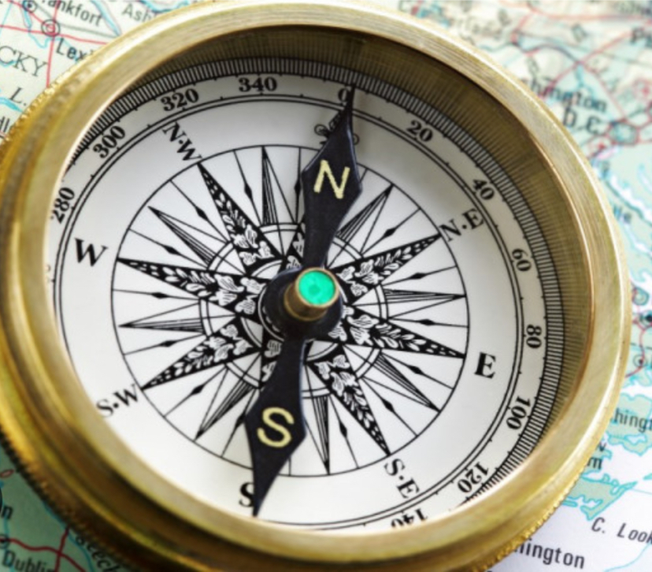

Introduction
Have you ever got lost in a jungle? How did you find your way back? Years ago, a lot of people used to get lost in jungles, in oceans, or in deserts; thus there was a great need to create an instrument to figure out directions. The compass has an interesting context and many factors that have led to its invention; it also has a lot of benefits and social and economic effects.

Context in which the breakthrough was made
The compass is an instrument that shows the direction relative to the North Pole using a diagram called a compass rose that shows four main directions (North, South, West, and East). It was invented as a device for divination by the Chinese.Later on, the Han Dynasty adopted it for navigation during the 11th century. The first use of this instrument was in the West of Europe (western Europe) and the Islamic world (the Middle East) and occurred during the early 13th century. The first compasses in ancient Han Dynasty China were made out of lodestones, a naturally magnetic material made of iron. After the 11th century, they were developed and were made out of iron needles, magnetic material by striking them with lodestones. The dry compasses (the ones that we use now) began to appear around 1300 A.D. in Europe (specifically in France, England, Portugal, and Spain) and the Islamic world. After that, it was supplanted around the early 20th century by the liquid-filled magnetic compass. On the other hand, modern compasses use a magnetic material (needle or dial inside) a capsule completely filled with liquids such as (lamp oil, mineral oil, white spirits, or ethyl alcohol is common). While older and ancient compass designs commonly incorporated inside, the capsule to allow for volume caused by the climatic temperature or the altitude of the place.
Main factors which led to the discovery
The main factors that led to the discovery is when the people in ancient China discovered that if a lodestone was suspended it could turn freely, and that it would always point towards the magnetic poles knowing that an iron rod brought near a lodestone magnetized. Compasses were not initially used to indicate direction, but it was created and discovered for people to choose areas suitable for building houses, groaning crops, and to search for different kinds of rare gems under the floor. .
Importance of the discovery
Just like any invention, the compass has its own importance and benefits. The first importance was that it was used earlier as backups for when the sun or the stars or other landmarks could not be seen anymore. Eventually, the compass became more reliable and more explorers understood how to read them, thus. the device became a critical navigational tool. Another importance for the compass is that it allowed for more accurate navigation, leading to improved trade or exploration and the spread of thinking (or ideas) across different nations, religions, and cultures. Nowadays, the compass continues to be an essential tool for navigation, used in a wide range of applications, including aviation (planes/airplanes), shipping (boats, yachts...) and outdoor recreation such as (diving, hiking...). Last but not least, the compass helped in exploring since its creation. It has helped many explorers navigate around the world and discover new nations and lands.
Social economic effects
The compass has many social and economic effects. When it comes to the social effects, the compass has helped people move into other new places where there are different nations.There, people may learn new things about different cultures and religions. By navigating to new areas. education became accessible to new people. Moreover, the compass invention has had many economic benefits. Using this instrumental invention, people can even trade in winter and autumn when stars and the sun are not visible. This has helped boost economic growth worldwide. In addition to this, planes and ships held touristic events in which people travel to new destinations for leisure. This makes business bloom.
Conclusion
In conclusion, the compass is one of the most important instruments ever made. Since its creation, it has helped boost people’s lives socially and economically. As previously mentioned, the compass has led to the advancement of different technologies such as planes and ships It has also paved a way for the creation of other inventions. Without the compass, people would still be waiting for clear skies to be able to navigate easily.